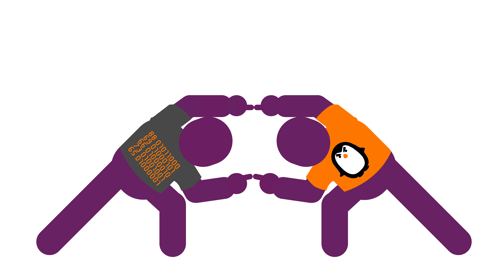
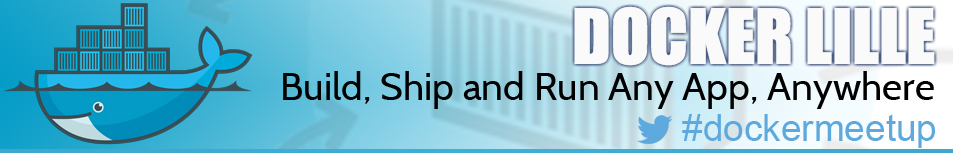
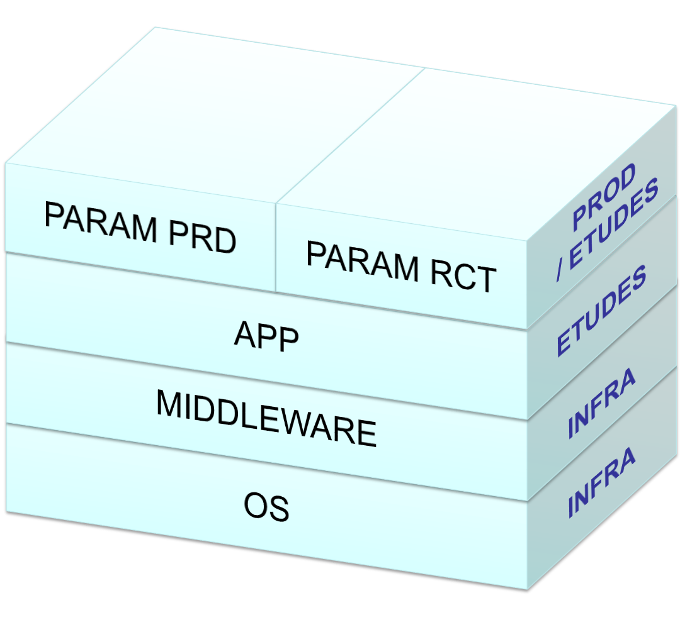
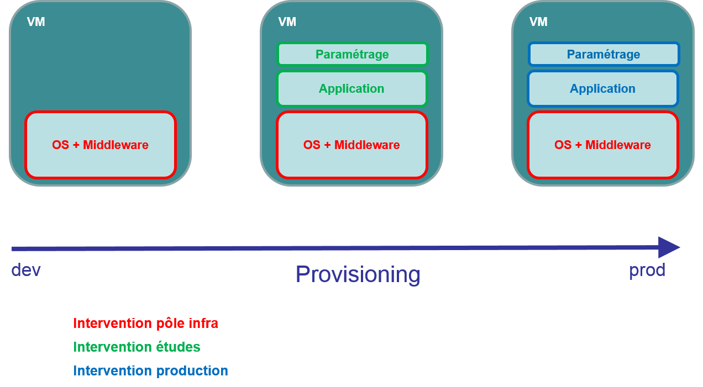
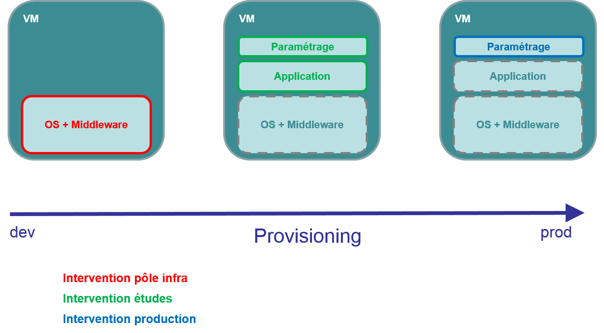

Docker en production
Retour d'expérience
Qui sommes nous ?
Introduction à l'outil
Outil qui permet d’empaqueter une application et ses dépendances dans un conteneur virtuel qui pourra être exécuté sur n’importe quel serveur Linux (récent)
Développé par Docker, Inc + contributeurs
Ecrit en Go
S'inscrit dans la mouvance DevOps
Quel est le problème ?
La solution
Dans l'IT
Et par rapport à une VM ?
Quelques notions de base
Image
- Ensemble de layers qui composent un filesystem
- Template de conteneur
- En lecture seule
- Créé manuellement ou automatiquement via un
Dockerfile - Hiérarchisable
BUILD
Conteneur
- Instancié à partir d'une image
- Modifiable
RUN
Registry
- Dépôt où sont stockées des images
- Dépôt à partir duquel les images sont distribuées
- Public : https://hub.docker.com/
- Privé : https://hub.docker.com/_/registry/
DISTRIBUTE
Enjeux pour
3SI Commerce
Banaliser les machines
Tout est inclus dans les conteneurs
Améliorer l'efficacité des équipes
Installation et configuration de l'OS
Installation des librairies
Installation et configuration des middlewares
Installation et configuration des applications
Livraisons facilitées
Livrable transporté d'environnement en environnement
Format de livrable unique
Maintenir le niveau de service
Retours arrière simple
Disponibilité / temps de réponse
Transparent pour l'exploitation
Contexte chez
3SI Commerce
Environnement technique
RedHat / CentOS
VMWare
SAN
Load balancer
Oracle Weblogic
Oracle Coherence
N applications Java/JEE
1ère rencontre
Docker, ça a l'air pas mal comme techno...
Découverte de l'écosystème
Premiers tests
Premiers POCs
Premières surprises !
Les conteneurs ne persistent pas les données après plusieurs docker run
Dockerfile : quésaco ?
Volume = spécialisation de la VM ?
Isolation réseau
1er brainstorming
Qu'est-ce qu'on en fait ?
- Simple conteneurisation : 1 application = 1 conteneur
- Le moins d'impact possible sur le réseau
- Pas de clustering (swarm)
- Haute dispo gérée par l'infra de virtualisation
- Sur un périmètre limité : site web
- De la recette jusqu'à la prod (dev : )
Qui pour avancer ?
Une core team
Multi-compétences / multi-domaines
Autonome
Pas de chef ?
Si, en mode pare-feu
Pour arbitrages et assistance hiérarchique
Des contributeurs activés au besoin
Recette technique
Supervision
Réseau
Pilotage
Des sponsors
Reponsable Etudes
Responsable Production
De l'aide extérieure
- Thomas Clavier, consultant DevOps freelance
- http://deliverous.com/ (1er hébergeur Docker français)
De l'aide extérieure

- Docker Meetup Lille
- http://www.meetup.com/fr/docker-lille
De l'aide extérieure

- Cabinet de conseil, réalisation, formation et support informatique spécialisé dans l'Open Source et l'agilité
- Formateur officiel Docker
Comment avancer ?
Lot #1 Docker, ça marche
- Perf acceptables
- Ne nécessite pas de changement d'archi majeurs
Lot #2 Docker, c'est utile
- Ajout de machines
- Reconfiguration de machines
- Retours arrière
Lot #3 Docker, ça s'intègre dans notre environnement
- Supervision
- Logs
- Débogage
- Exploitabilité
Lot #4 Docker, c'est en prod !
- Sur un périmètre suffisant pour en voir le bénéfice
Quelques mois plus tard ...
Docker est en production
Difficultés techniques
Techno jeune
Documentation pas toujours exhaustive
Ecosystème en constante évolution
Intégration dans notre environnement
Problème rencontré avec Oracle Cohérence
Nécessité de couper l'isolation réseau des conteneurs
Gestion du paramétrage applicatif
Tous les paramétrages d'environnement embarqués dans l'image et switch au démarrage ?
Data volume contenant les paramétrages ?
Nouveau layer dédié au paramétrage ?
Gestion de l'espace disque
Sur le registry d'entreprise
Sur chaque machine hôte hébergeant un moteur Docker
Difficultés organisationnelles
Vaincre les réticences
Présenter la démarche à tous les services avant de les solliciter
Gestion des responsabilités
Qui fait quoi ?

Remettre à plat l'existant
Redéfinition des process de livraison
Redéfinition des process de déploiement
Mise en commun des process
Comment aller en prod ?
Objectif principal :
sécuriser la MEP
Comment sécuriser ?
- Doubler l'infrastructure
- Décorréler des actions réseau
- Décorréler de la MEP fonctionnelle
Arguments en notre faveur
- Arrivée de nouvelles machines
- OS incompatibles
Conclusions
#1 Banaliser les machines
#2 Améliorer l'efficacité des équipes
Facilite les montée de version de chaque composant
Facilite les changements de composant
SANS Docker, qui fait quoi ?
AVEC Docker, qui fait quoi ?
#3 Livraisons facilitées
Nécessité de reconstruire l'image d'environnement en environnement
Solution envisagée
- Séparation claire entre propriétés applicatives et environnementales
- Utilisation de Confd pour générer tous les fichiers de configuration
- Data volume container
#4 Maintenir le niveau de service
Mais aussi ...
Outils et méthodes communes
Référentiels
Construction
Livraison
Déploiement
Responsabilités clairement définies
Grâce à la hiérarchie des images
S'accorde à l'organisation de l'entreprise
Banalisation des MEP techniques
Test en cours de montée de version/changement des middlewares
Impacts prévus en production : MINEURS :-)